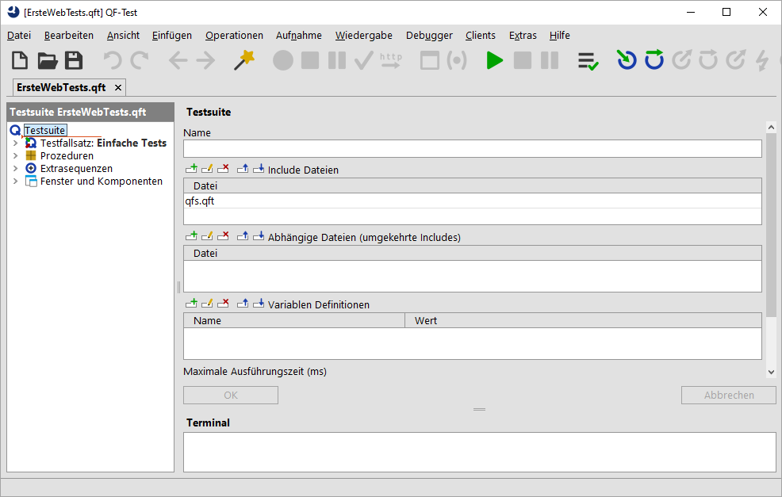
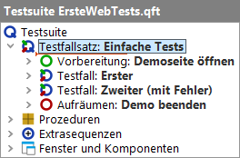

| Version 6.0.3 |
Hinweis Beim ersten Start von QF-Test und/oder der zu testenden Anwendung über QF-Test kann eine Sicherheitswarnung der Firewall auftreten mit der Frage, ob das Netzwerkprotokoll für Java geblockt werden soll oder nicht. Da QF-Test die Java Netzwerkprotokolle für die Kommunikation mit dem SUT (System under Test) nutzt, darf diese nicht geblockt werden, um das automatisierte Testen zu ermöglichen.
Nach dem Starten von QF-Test laden Sie bitte unser erstes Beispiel:
qftest-6.0.3/doc/tutorial Ihrer
QF-Test Installation.
ErsteWebTests.qft aus und
öffnen diese.
QF-Test präsentiert Ihnen die Testsuite wie im folgenden Bild dargestellt:
|
|  | ||
|
| Abbildung 10.1: Die erste Testsuite | ||
Der linke Bereich des Hauptfensters enthält die Testsuite, die in einer
Baumstruktur dargestellt wird.
Rechts befindet sich die
Detailansicht des Knotens, der im Baum gerade markiert ist. (Falls die Detailansicht bei
Ihnen nicht zu sehen sein sollte, aktivieren Sie diese bitte über das Menü »Ansicht«-»Details anzeigen«.)
Im Bereich
unten rechts befindet sich das Terminal, welches die Ausgaben von QF-Test
und dem zu testenden Client protokolliert.
Mit Hilfe des Baumes können Sie durch die Testsuite navigieren und einzelne Knoten auswählen, für die dann jeweils die Details im rechten Fensterbereich eingeblendet werden.
Der Testfallsatz enthält primär zwei Testfälle, umgeben von einem "Vorbereitung"/"Aufräumen" Knotenpaar, das im Wesentlichen die Testanwendung startet bzw. beendet.
|
|  | ||
|
| Abbildung 10.2: Der Inhalt des Testfallsatz Knotens | ||
In den folgenden Abschnitten werden wir Funktion und Zweck der einzelnen Knoten erklären.
| Letzte Änderung: 6.9.2022 Copyright © 2002-2022 Quality First Software GmbH |